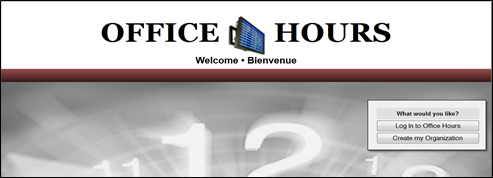

Office Hours allows users to create Online office hour schedules which are available to the public through various screens. These schedules can be easily modified or removed from the system. There is both a user control panel and an Administrator Control Panel. In the User Control Panel the user can add, remove, and maintain schedules. In the administrator control panel, the administrator has all the rights to access all the organizational information. The administrator can also update, delete, or add branch location and organization information.
The power to maintain the information on the Office Hours Board screen is controlled by the Administrator. Initially, upon opening the website, you are asked to Login to an existing Organization or create an Organization. If you go into an existing organization, it will prompt you to ask if you are an Administrator or User and then the program will process accordingly. If the User selects the Administration then the User logs into the Administrator Control Panel, otherwise the User control panel will appear.
If the User is creating a new organization, the User must fill in the required information to create New organization.

Created with the Personal Edition of HelpNDoc: Free PDF documentation generator